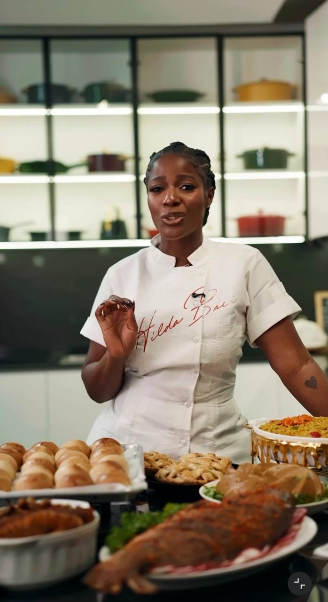
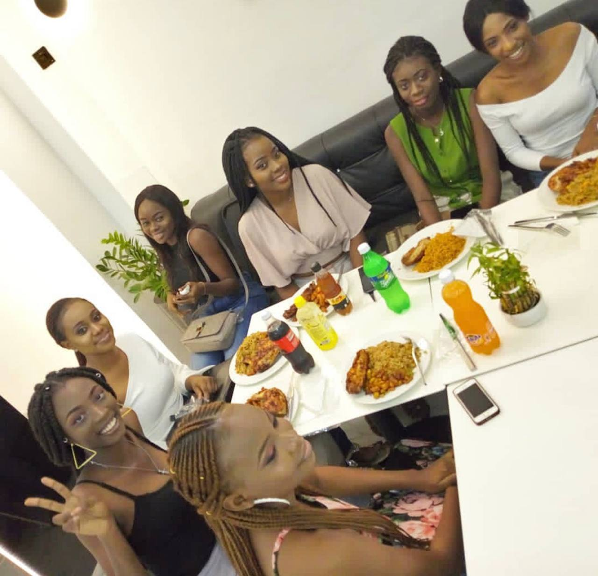
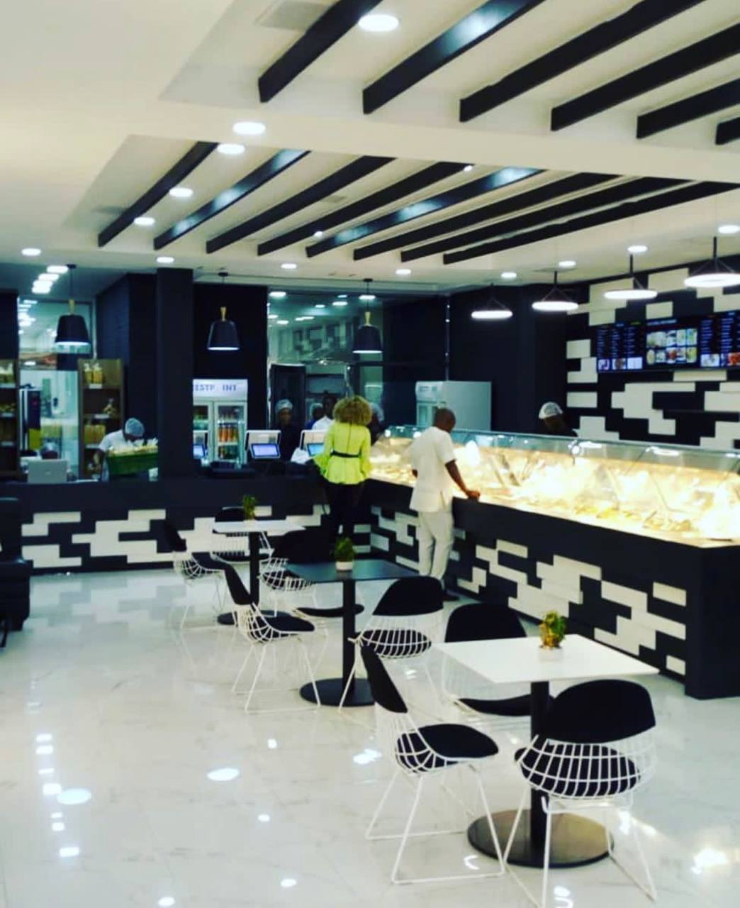
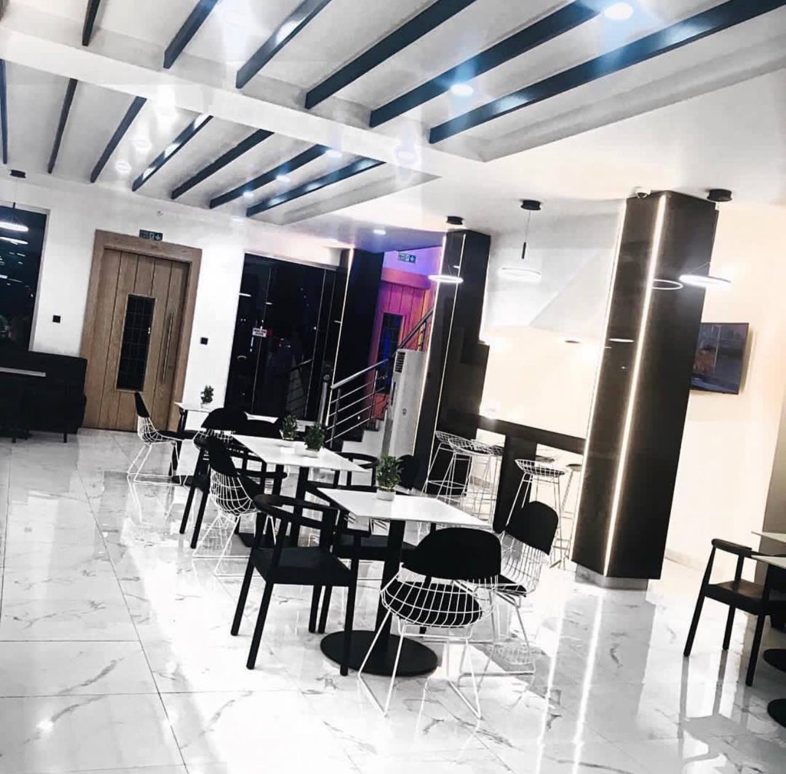
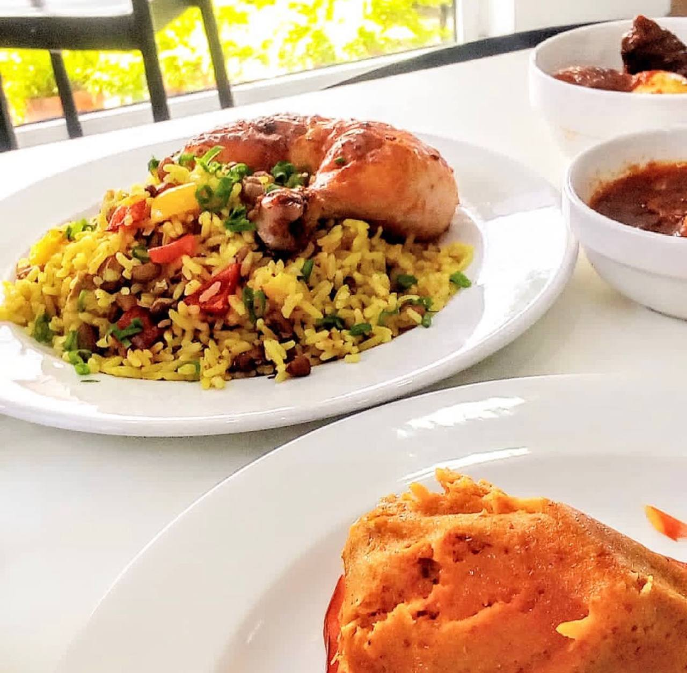

Fin's Chop & Lick Resturant was established in June 2024 with a clear mission: To serve happiness through authentic flavors, using the freshest ingredients to create a dining experience that feels like home. Founded and led by our CEO, Nasiru Fridaous Oladimeji (born in 2002)At Fin's Chop & Lick Resturant, our story began with a simple idea to create a place where people can enjoy great food, relax, and share memorable moments with family and friends. What started as a small passion for cooking and hospitality gradually grew into a vision of building a restaurant that focuses on quality, comfort, and exceptional service. From the very beginning, our goal has been to provide meals that are not only delicious but also prepared with fresh ingredients and attention to detail. Our chefs carefully select ingredients and combine traditional cooking techniques with modern flavors to create dishes that satisfy every guest. Over the years, Fin's Chop & Lick Resturant has grown into a welcoming dining destination where guests can enjoy a warm atmosphere, excellent service, and meals that are made with passion. We believe that dining should be more than just eating it should be an experience that brings people together. Whether you are visiting for a casual lunch, a family dinner, or a special celebration, our team is dedicated to making sure every moment you spend with us is enjoyable and unforgettable. At Fin's Chop & Lick Resturant , we are proud to serve our community and continue building a place where good food and great memories are always on the menu.
To serve happiness through authentic flavors, using the freshest ingredients to create a dining experience that feels like home.
To redefine the Nigerian dining landscape by becoming the gold standard for culinary excellence and hospitality.

Chef Hilda Baci has over 15 years of experience in international cuisine and leads our kitchen
with passion and creativity.




Great flavors are born from fire, great success is born from the journey. We don't just serve meals we serve the reward for your hard work.